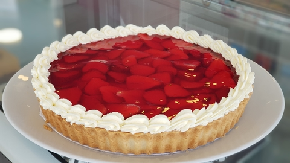

Receta de Tarta de Frutilla
Ingredientes:
- 1 base de maza para tarta
- 500g de frutillas frescas
- 300ml de crema de leche
- 50g de azucar impalpable
- 1 cucharadita de extracto de vainilla
Instrucciones:
-
Preparación de la masa:
- Precalienta el horno a 180°C (350°F).
-
Forra un molde para tarta engrasado con la base de masa y pincha el
fondo con un tenedor.
-
Hornea la base de masa durante unos 15-20 minutos o hasta que esté
dorada. Deja enfriar completamente.
-
Preparación de las fresas:
- Lava y seca las fresas. Reserva algunas para decorar.
-
Corta las fresas en rodajas finas o en mitades, según tu
preferencia.
-
Preparación de la crema:
-
En un bol grande, bate la crema de leche (nata) con el azúcar glass
y el extracto de vainilla, hasta que tenga una consistencia firme.
-
Montaje de la tarta:
-
Una vez que la base de masa esté completamente fría, extiende una
capa generosa de crema batida sobre la superficie.
-
Coloca las fresas cortadas sobre la crema, cubriendo toda la
superficie de la tarta de manera decorativa.
-
Repite el proceso, añadiendo otra capa de crema y fresas si lo
deseas.
-
Decoración y refrigeración:
-
Decora la parte superior de la tarta con fresas enteras o en
rodajas.
-
Refrigera la tarta durante al menos 1 hora antes de servir para que
la crema se asiente y las fresas se enfríen.
Video de la Receta:
Imagen de la Tarta:

Más Recetas:
Tabla de Tiempos de Cocción:
| Fruta |
Tiempo de Cocción |
| Manzana |
40-45 minutos |
| Frutilla |
15-20 minutos |